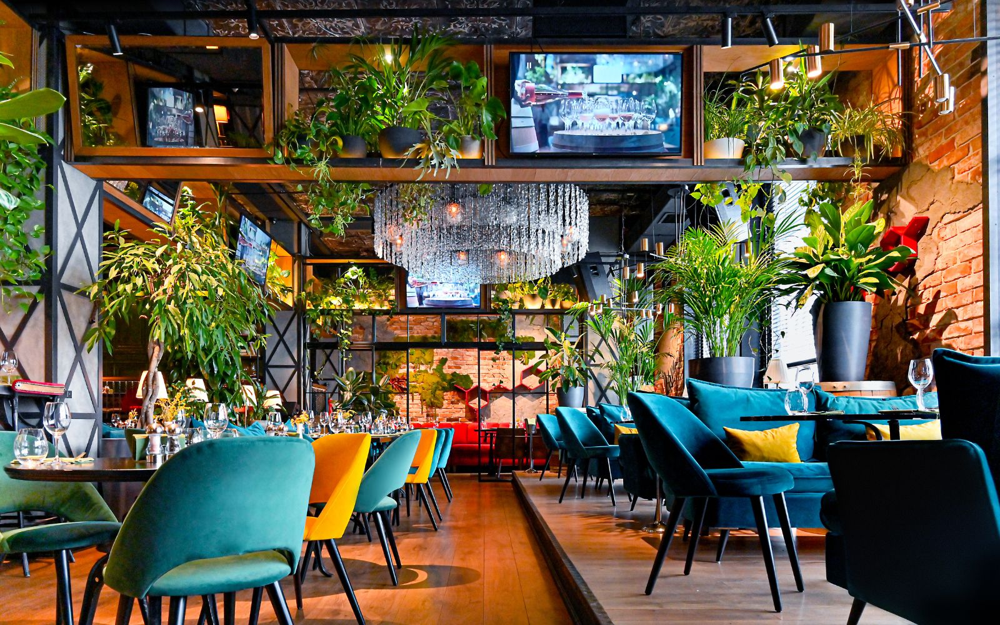

Flavorscape Bistro restaurant
Welcome to Flavorscape Bistro, where our motto, "a place where a variety of delicious
flavors come together to create a culinary experience," comes to life with every bite.
Our passionate chefs are dedicated to crafting a diverse menu that transcends borders
and cultures, ensuring that each dish is a symphony of flavors. Nestled in a warm
and inviting atmosphere, our restaurant invites you to savor the joys of dining
with friends and family.

Appetizers
- Soup of the Day: A delicious homemade soup prepared with fresh seasonal ingredients.
- House Salad: Mixed greens, cherry tomatoes, avocado, and balsamic vinaigrette dressing.
- Shrimp Tacos: Freshly marinated shrimp with spices, served in corn tortillas with cilantro sauce.
Main courses
- Chicken Alfredo Pasta: Fettuccine cooked al dente with creamy Alfredo sauce and grilled chicken.
- Gourmet Burger: Our juicy Angus beef burger served with cheddar cheese, caramelized onions, and homemade french fries.
- Grilled Salmon Fillet: Grilled fresh salmon with a lemon and dill sauce, served with mashed potatoes and asparagus.
Vegetarian option
- Quinoa and Vegetable Bowl: Quinoa mixed with broccoli, carrots, spinach, and tahini dressing.
- Falafel Wrap: Homemade falafel, lettuce, tomato, cucumber, and tzatziki sauce in a whole wheat wrap.
Desserts
- Chocolate Raspberry Tart: A sweet ending with a decadent chocolate tart and fresh raspberries.
- Homemade Ice Cream: A variety of artisanal ice cream flavors with seasonal fruit accents.
- Tiramisu: An Italian classic with layers of coffee-soaked sponge cake and mascarpone cream.
Berevage
- Wine Selection: Our carefully curated selection of red and white wines to complement your meal.
- Specialty Cocktails: Try our exclusive cocktails like Passionfruit Mojito or Lavender Martini.
- Soft Drinks and Mineral Water: Various non-alcoholic options to enjoy.